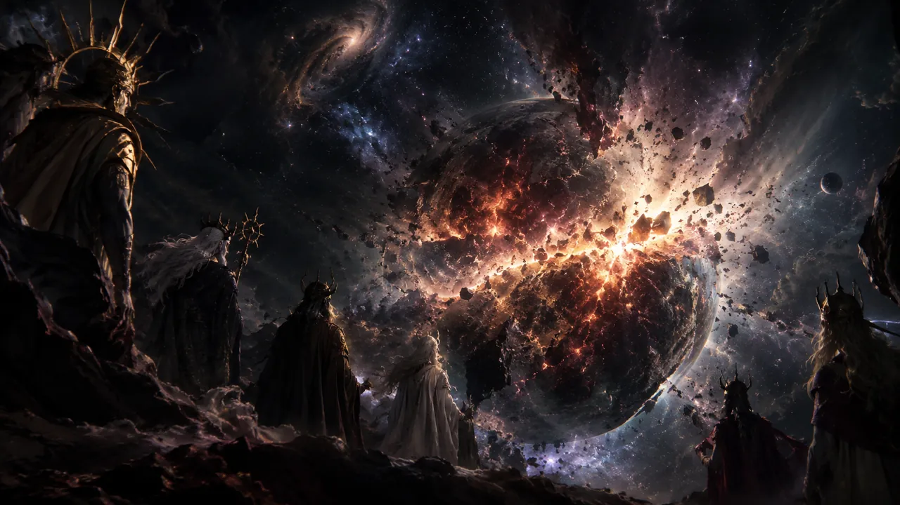

EL MUNDO QUE SE PERDIÓ
Hace eones existía un solo mundo, el único habitable, y lo destruyó un estallido. Venía de una guerra, un conflicto de intereses que se había ido alargando por las creencias hacia distintos dioses. Aquella guerra, que ya se había vuelto eterna, terminó estallando por completo y borró de la faz de la existencia el único suelo donde se podía vivir.
Tras ese hecho los dioses observaron el infinito del cosmos. Lo vieron vacío, sin mortales que les rindieran culto. El poder que tenían lo habían conseguido en base a la adoración de esa gente, y ahora no quedaba nadie. Se reunieron en medio del cosmos y decidieron dejar a un lado sus diferencias, porque al fin y al cabo ellos eran los culpables de aquella destrucción.
